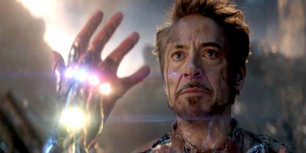

TONY STARK
Anthony Edward Stark known as Tony Stark, a billionaire American business mogul, playboy and ingenious scientist, who suffered a serious chest injury during a kidnapping. When his captors try to force him to build a weapon of mass destruction instead he creates armor to save his life and escape captivity. Later, Stark develops the suit for him, adding weapons and other technological devices that he designed to through his company, Stark Industries. He wears the suit and successive versions to protect the world as Iron Man. initially concealed his true identity, Stark finally declared that he was, in fact, Iron Man in a public announcement.
I chose Tony Stark (Ironman) among all the Avengers, because he always showed the image that he didn't care about anyone but himself. The lustful, self-centered image of him made everyone think about it and at the end of a great saga (which still continues), he decides to give his life for all the people him care about and the rest people in the world. For me he is the best of all, he did not have any super power, just a lot of money.
